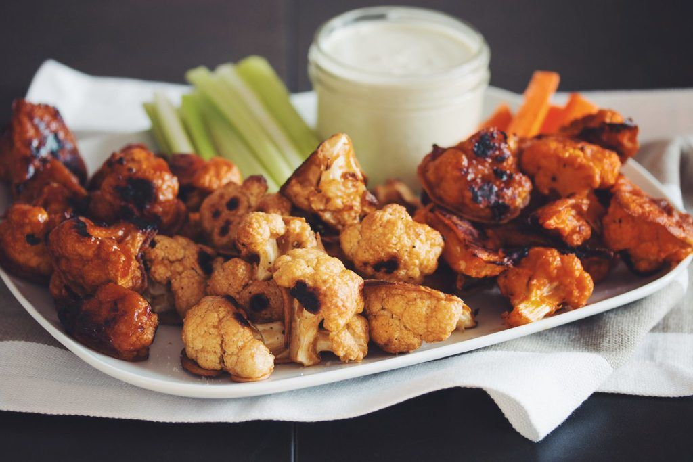

Vegetarian (or Vegan!) Cauliflower Buffalo Wings (adapted from the Hot for Food recipe)
"Wow" even your carnivorous friends with this tasty game-day-ready recipe! These breaded, oven-baked crispy wings tossed in buffalo sauce will please even the most devout meat eaters!

Course: appetizer, main course, side dish
Prep time: 25 minutes
Cook time: 50 minutes
Makes 1 main course dish!
Ingredients
1 head of cauliflower (on the smaller side)
¼ cup plain extra creamy oat milk
¼ cup water
⅜ cup all-purpose flour
1 tsp garlic powder
1 tsp onion powder
½ tsp cumin
½ tsp paprika
½ tsp cayenne pepper (optional; add more or less to make for a spicier or less spicy batter)
A dash of kosher salt (⅛ tsp)
A dash of black pepper (⅛ tsp)
Frank’s Red Hot Buffalo Sauce (or Frank’s Red Hot Sauce + melted vegan butter to make vegan)
Your favorite ranch or bleu cheese dip
Instructions
Line a baking sheet with parchment paper, checking the box and making sure it can handle 450-degree-Fahrenheit heat (I use Reynolds that goes up to 425 degrees and it works fine), and preheat your oven to 450 degrees Fahrenheit.
Cut your cauliflower into florets of equal size. Larger florets can be cut in half.
Mix all of the ingredients except for the buffalo sauce and dip into a mixing bowl, making sure that the batter is not too thin but not too thick. If it is too thick, add more milk and water (keeping them proportional); if it is too thin, add more flour.
Fully and evenly each floret with the batter and tap off the excess on the side of your mixing bowl.
Place florets on a fairly even layer on your parchment-lined baking sheet, making sure to not overcrowd the sheet.
Bake for 25 minutes, flipping the florets over halfway through to make sure that both sides are crispy and golden brown. Make sure the batter has become solid before flipping.
While baking, add buffalo sauce to a large bowl. Once the cauliflower is done, toss the florets into the bowl and coat them evenly with sauce.
Spread the sauce-coated florets back onto the lined baking sheet, baking for about another 25 minutes and flipping halfway through once again. Check on them after 20 minutes, and if the tips of the batter are starting to turn black, then they are finished.
Serve with your favorite dip if you desire, and BE CAREFUL! These wings are very hot straight from the oven.